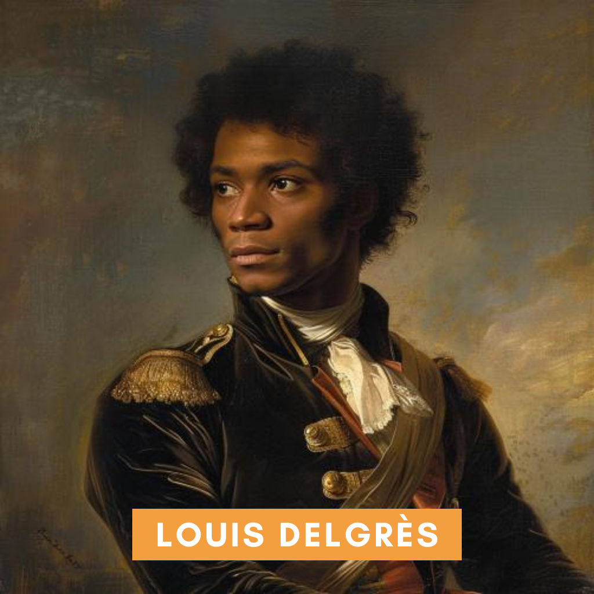

Louis Delgrès (2 August 1766 – 28 May 1802) was a leader of the movement in Guadeloupe resisting reoccupation and thus the reinstitution of slavery by Napoleonic France in 1802.
Delgrès was mulatto, born free in Saint-Pierre, Martinique.
A military officer for Revolutionary France he fought for France against Great Britain in the Caribbean.
In 1802, Napoleon wanted to reinstate slavery throughout the French Empire.
Delgrès took over the resistance movement after it became evident that Napoleon had betrayed both the ideals of the Republic and the interests of France's colored citizens.